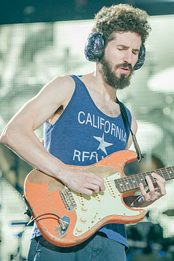
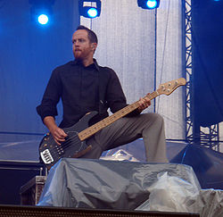

Michael Kenji Shinoda nació el 11 de febrero de 1977 en Agoura, California. Su padre es japonés, mientras que su madre es rusa. Tiene un hermano menor llamado Jason. Estudió diseño gráfico e ilustración en el colegio privado Art Center School en Pasadena, California.1 Desde 2003 está casado con Anna Hillinger y tienen 2 hijos, uno el cual se llama Otis Akio Shinoda, mientras que el otro es desconocido públicamente. Mike es el MC, cantante, productor musical, tecladista y guitarrista rítmico de Linkin Park. En la secundaria, conoció y se hizo amigo de Brad Delson. Posteriormente, junto con Brad y Rob Bourdon iniciaron la banda Xero. En el colegio al que Shinoda asistía, Art Center School, conoció al DJ Joe Hahn, el cual se unió a Xero. Por otro lado, Delson conoció al bajista Dave «Phoenix» Farrell en la universidad, que también fue reclutado para la banda. El grupo después pasó a llamarse Linkin Park y en 1999 se unió el vocalista Chester Bennington, reemplazando a Mark Wakefield, quién dejó la banda después del poco interés por parte de las compañías discográficas en su primer trabajo, Xero.
El grupo finalmente firmó con Warner Bros. y lanzó en 2000 su álbum de debut, Hybrid Theory.15 Dicho álbum tuvo gran éxito, llegando a la posición número dos del Billboard 2006 y, uno de sus sencillos, «In the End», llegó al segundo lugar del Billboard Hot 100, convirtiéndose en el mayor éxito de su carrera.7 Con posterioridad, lanzaron seis álbum de estudio: Meteora (2003), Minutes to Midnight (2007), A Thousand Suns (2010), Living Things (2012), The Hunting Party (2014) y, por último, One More Light (2017),8910 todos los cuales lograron alcanzar el número uno en la principal lista musical de Estados Unidos.11 Además, en Reino Unido todos sus discos de estudios, junto al álbum de remezclas Reanimation, han entrado en los primeros cinco lugares del UK Albums Chart. También tiene álbumes en solitario.
(pincha en la imagen para ir a su spotify)
(pincha aquí para ir al spotify de Fort Minor)
Bradford Phillip Delson (1 de diciembre de 1977), es el guitarrista líder de la banda de rock, Linkin Park. También es el A&R de Machine Shop Recordings. Brad Delson asistió a la Escuela Superior de Agoura con su amigo de la infancia y compañero de banda Linkin Park, Mike Shinoda. Tocó en varias bandas a lo largo de su carrera en la preparatoria, el más notable grado de ser relativa, en la que conoció y se asoció con el baterista Rob Bourdon. Relative Degree fue simplemente un concierto y, después de alcanzar ese objetivo, se disolvió. Después de graduarse en 1995, Delson, Shinoda, y Bourdon formaron Xero, que eventualmente se convertiría en el punto de partida para Linkin Park. Delson entró en UCLA en 1995 como becario Regent trabajando hacia un título de Licenciada en Ciencias de la Comunicación, con especialización en Negocios y Administración. Fue miembro de Phi Beta Kappa, y compartió un dormitorio con el futuro compañero de banda Linkin Park, Dave Farrell en tres de sus cuatro años en la escuela, Farrell le mostró como tocar el bajo, y así también aprendió como tocar el bajo.2 Delson también tuvo la oportunidad de hacer una pasantía con un miembro de la industria de la música como parte de sus estudios y terminó trabajando para Jeff Blue, un representante de A & R de Warner Bros. Records, que ofrece una crítica constructiva en los demos de Xero. Blue más tarde introdujo Chester Bennington, que se convertiría en el vocalista de Linkin Park, con el resto de la banda. Después de graduarse en 1999, Delson decidió renunciar a la facultad de derecho con el fin de seguir una carrera musical con Linkin Park.
David Michael Farrell (Plymouth, Massachusetts, 8 de febrero de 1977), más conocido como Phoenix, es el bajista del grupo de rock alternativo estadounidense Linkin Park. Farrell fue miembro de un grupo de ska cristiano conocido como Tasty Snax. Mientras asistía a la universidad, practicaba con Brad Delson "tocando el bajo de Brad en su habitación". A pesar de esto, como tenía que viajar con su banda, los Tasty Snax, no pudo tocar con Delson y su banda, que se convertiría en Linkin Park. Tras cambiar su nombre a Snax, Farrell comenzó a tocar el bajo en la banda antes de abandonarla de nuevo para unirse a Linkin Park.
Robert Gregory «Rob» Bourdon (Calabasas, California; 20 de enero de 1979)1 es el baterista de la banda alternativa Linkin Park. Robert Gregory Bourdon nació el 20 de enero de 1979. Rob nació en Calabasas, California y ahora vive en Los Ángeles. Sus padres son Gregory y Patty; tiene un hermano menor llamado Dave. Creció en la misma ciudad que los miembros de Incubus y fue a la escuela con los miembros de Hoobastank.
Rob comenzó a tocar la batería a la edad de 10 años tras ver un concierto de Aerosmith. Ya que su madre, Patty, fue la exnovia de Joey Kramer, el baterista de Aerosmith, Bourdon pudo estar en el backstage y ver toda la producción. Kramer también dio a Rob un pedal de bombo. A Rob también le gusta tocar piano cuando tiene tiempo. Rob acostumbraba a tomar lecciones cuando era joven y forzado a seguir.
En sus primeros años de adolescencia, Bourdon tocó en algunas bandas con sus amigos. Fue en esa época que conoció a su actual compañero de banda Linkin Park, Brad Delson, y tocaron juntos durante un año en un grupo llamado Relative Degree. Su meta era tocar en el Teatro Roxy, después de lograr su objetivo con un espectáculo sell-out, Relative Degree finalmente se disolvió. En 1995, Delson, Mike Shinoda y Bourdon formaron Xero que se convertiría en el punto de partida para Linkin Park.
Joseph Hahn, conocido también como Joe Hahn, Chairman Hahn o Mr. Hahn (Dallas, Texas, 15 de marzo de 1977) es un director de videos musicales, también conocido como el DJ en la banda Linkin Park. Joe tiene un alter ego llamado Remy. Joseph "Joe" Hahn nació en Dallas, Texas el 15 de marzo de 1977 pero creció en Glendale, California. Hahn es de segunda generación América coreana.
Hahn se graduó de la Herbert Hoover High School en Glendale en 1995. Luego estudió en el Art Center College of Design de Pasadena, pero no se graduó.4 Hahn se unió a Linkin Park, llamada en ese entonces Xero, en 1997 como el DJ de la banda. Desde entonces, él ha dirigido la mayoría de los videos de la banda (excepto "One Step Closer","Crawling","Faint","Given Up" y "We Made It"). Hahn, junto con su compañero de banda Mike Shinoda, es responsable de la mayor parte de las ilustraciones de los álbumes de Linkin Park. Además, participó con Mike Shinoda en su producción The Rising Tied, del proyecto alterno de Hip Hop Fort Minor. A Joe se le ocurrió el concepto de One Step Closer y ha estado involucrado en todos los demás videos. Él es el director oficial de los videos para la banda. Hahn se convirtió en el primer coreano estadounidense en recibir un Grammy cuando la banda ganó el premio 2002 de Mejor Interpretación de Hard Rock.
También se dedica a hacer remixes de canciones en colaboriación con otros artistas.
(pincha en la imagen para ir a su spotify)
Chester Charles Bennington (Phoenix, 20 de marzo de 1976-Palos Verdes, 20 de julio de 2017) fue un músico, cantante, compositor y actor estadounidense, conocido por haber sido el vocalista principal y compositor de la banda Linkin Park, además de otros grupos como Dead By Sunrise, Grey Daze, Stone Temple Pilots.
Bennington ganó prominencia como vocalista luego del lanzamiento del álbum debut de Linkin Park, Hybrid Theory, en 2000, que se convirtió en un éxito comercial, siendo el álbum debut más vendido de la década, así como uno de los pocos álbumes que alcanzaron tantas ventas.1 Además de Hybrid Theory (2000), Bennington grabó con Linkin Park un total de 7 álbumes de estudio; Meteora (2003), Minutes to Midnight (2007), A Thousand Suns (2010), Living Things (2012), The Hunting Party (2014) y One More Light (2017).
Chester Bennington formó su propia banda, Dead By Sunrise, como un proyecto paralelo en 2005. También fue el cantante principal de Stone Temple Pilots en 2013 hasta 2015. La revista Hit Parader lo colocó en el puesto 46 en la lista de Los 100 mejores vocalistas del Metal de todos los tiempos.2
Falleció a causa de suicidio por ahorcamiento el día 20 de julio de 2017, en su residencia de Palos Verdes, California, a los 41 años de edad.
(pincha en la imagen para ir a su spotify)
(pincha aquí para ir al spotify de Dead By Sunrise)